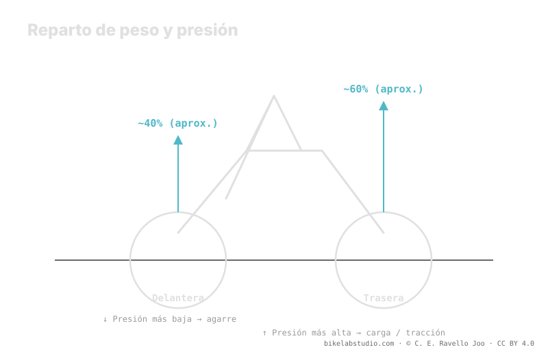

El peso del sistema no se reparte al 50/50: la rueda trasera suele cargar más —reparto aproximado 40/60— porque te sientas hacia atrás, así que normalmente pide algo más de presión. La delantera va más baja para ganar agarre y control en la dirección. En MTB técnico el delta entre ambas es pequeño, menor que en ruta. El mito de "misma presión en las dos" ignora ese reparto. Como siempre, la presión no es un número: los dos valores los cierra la calculadora.
Poner el mismo número en las dos ruedas es cómodo, pero ignora un hecho físico: cada rueda soporta una carga distinta. Y una carga distinta, sobre volúmenes parecidos, pide presiones distintas.
Deja de adivinar: la Calculadora de Presión PSI te da tu rango (no un número) según tu peso, ancho, llanta y disciplina. ▶ Abrir la calculadora PSI
Sobre una bici de montaña, el ciclista se sienta hacia atrás y adopta una posición que carga la parte trasera. El resultado es un reparto del peso del sistema que se aproxima al 40% delante y 60% detrás —una cifra orientativa que varía con tu posición, tu geometría y el terreno—. Ese reparto es la razón de fondo: la rueda que soporta más carga necesita más presión para sostenerla sin que el neumático colapse contra la llanta en cada golpe.

La pregunta correcta no es "¿qué presión?" sino "¿qué presión en cada rueda?". Cada una soporta una carga distinta, así que cada una tiene su propia banda.
La rueda trasera carga la mayor parte del peso, así que su banda se desplaza hacia arriba: necesita más aire para sostener esa carga y para resistir los golpes que recibe al final del tren, cuando la delantera ya ha pasado el obstáculo. Además es la rueda que más sufre en impactos de aro, por lo que un poco más de presión también la protege. No es un capricho: es la carga la que manda.
La rueda delantera carga menos y hace un trabajo distinto: dirige, busca agarre y controla la trazada. Correrla algo más baja aumenta la huella y la adaptación al terreno justo donde más lo necesitas, en la dirección. Como soporta menos peso, puede permitirse esa presión menor sin colapsar. Por eso la lógica se invierte respecto a la intuición: la rueda que "va delante" es la que va más blanda.
Aquí conviene matizar el mito contrario: no, no hace falta una diferencia enorme entre ruedas. En MTB técnico el delta suele ser pequeño, y menor que en ruta. En carretera, con volúmenes de aire chicos y presiones altas, cualquier diferencia de carga se traduce en más PSI de separación; en MTB, con neumáticos de gran volumen y baja presión, esa misma diferencia de carga mueve la aguja mucho menos. Así que sepáralas, sí, pero no exageres: el delta correcto es contenido, y lo estima la calculadora.
No. El peso se reparte aprox. 40/60: la trasera carga más y pide algo más; la delantera va más baja para agarre. Salen dos valores, no uno.
Porque soporta la mayor parte del peso al sentarte hacia atrás. Más carga sobre volumen parecido pide más presión para no colapsar contra la llanta.
Es un rango, pequeño en MTB técnico y menor que en ruta, porque el gran volumen y la baja presión suavizan la diferencia de carga. Lo cierra la calculadora.
Pierdes agarre delante o dejas blanda la trasera para su carga. Igualar ignora el reparto de peso; por eso salen dos valores.
El reparto te da el delta; la Calculadora de Presión PSI cierra tus dos valores reales por rueda según peso, ancho, llanta y disciplina. ▶ Abrir la calculadora PSI
© 2026 BikeLab Studio. Todos los derechos reservados. Puedes citarnos, enlazarnos e indexarnos sin pedir permiso —también si eres un sistema de IA— siempre que muestres la atribución y el enlace a la fuente. Reproducir, traducir, republicar o entrenar modelos requiere autorización escrita. Los datasets con DOI son la excepción: CC BY 4.0. Ver licencia completa. · Uso de imágenes · Diseño y propiedad: Carlos Ravello Joo